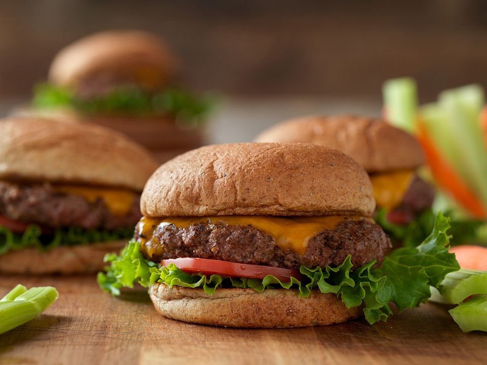

Return to Home
Lean Beef Burger

Description
A burger. A cheeseburger if you wish it. With a combo of low cal ingredients each plain burger is only 135 calories!!! Could be even less if you get leaner meat than the recipe says. adding normal american chees makes it 185 cals per burger, which is still insanely good. With cheese, which is how I eat it, its 24g of protein for each burger. Delectable!
Ingredients
- Natures Own keto burger buns
- 95/5 ground beef (or leaner if possible)
- American Cheese slices
- Onion Powder
- Garlic Powder
- Salt
- Pepper
Recipes
- Mix your seasonings all together in a bowl. I don't know amounts I genuinely just dump everything till it looks good.
- Roll your meat into a ball and roll it around the seasoning mixture.
- Squish it into a patty with your bare hands, and stick it onto a pan after heating it up
- I use medium high heat, and the times are questionable cause I lowkey be getting sick, but just go off of the vibes of cooking.
- While the pattys are cooking, stick your buns with cheese on them in the microwave for like 45 seconds ish before you're done cooking the patties
- Stick the patties in the buns
- Eat them